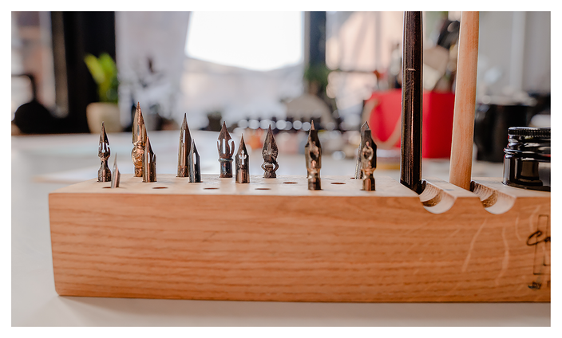

 16 Feb 2022 How to Choose a Calligraphy Pen? Unlike regular writing, where a simple ballpoint pen works, calligraphy uses a fountain pen. Without this tool, it is impossible to write beautiful text in calligraphic handwriting. However, a fountain pen is a highly individual instrument. Plus, many also use dip pens and brush pens. Let's consider the main criteria for choosi...
1 Feb 2022 What Is Calligraphy? Everyone knows that calligraphy is the art of beautiful handwriting. This word appeared in Ancient Greece and was literally translated as "beautiful handwriting". Today, the most popular and most advanced style of calligraphic writing is the so-called English Cursive or Copperplate. Calligraphy gained popularity in the 19t...